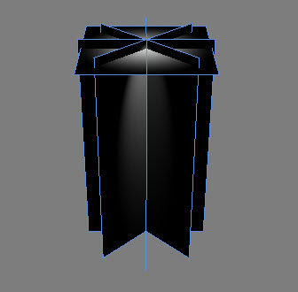
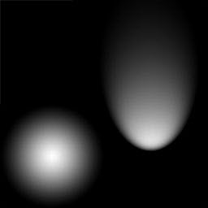
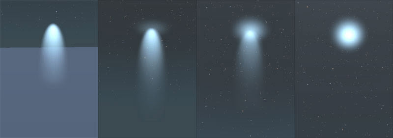

Обзор
Шейдер TemplBeamProc можно использовать для создания очень дешевых эффектов луча туманных фонарей.
Как создать дешевый луч противотуманных фар
- Создайте 3D-объект с задней плоскостью и четырьмя пересекающимися плоскостями, например:

- Создайте текстуру (все грани имеют общие UV-развертки) со следующим содержимым:

Эта текстура имеет только оттенки серого и не имеет альфы.
Шейдер TemplBeamProc может обрабатывать затухание при рендеринге лиц, находящихся под определенным углом к камере. Лучше всего использовать субматериалы для разных частей, потому что вы можете контролировать угол видимости, поэтому задняя плоскость получает 1 субматериал, а другие плоскости — по одному субматериалу.
Советы
- Хотя шейдер, похоже, не создает тени, проверьте Нет тени вариант убедиться.
- Непрозрачность должна быть установлена на 100% — шейдер сам управляет непрозрачностью и у вас достаточно контроля за счет диффузного цвета, диффузного множителя и т.д.
- С помощью диффузного цвета вы можете настроить цвет и яркость световых лучей. Рекомендуется не использовать только 1 канал RGB, чтобы получить хорошие результаты (избегайте 255,0,0 и подобных вещей). Всегда старайтесь отдавать каждому каналу хотя бы небольшой процент.
- Используйте текстуру без альфы и шкалы серого как диффузную.
- Параметры шейдера дают вам контроль над смешиванием, а также размером рендеринга луча.
Параметры шейдера
Параметры шейдера | Описание |
|---|---|
Цветовой множитель | Увеличение/уменьшение яркости и смешивания. |
Конечный цвет | Установите конечный цвет градиента. |
Конечный радиус | Установите радиус (в метрах) эффекта на конце объекта. |
Длина | Отрегулируйте масштаб визуализированного эффекта (например, масштаб реальной сетки). |
Исходная длина | Масштабирующий коэффициент. Если длина и исходная длина одинаковы, объект имеет масштаб 100%. |
Исходная ширина | То же, что и выше. |
Мягкий коэффициент пересечения | Управляет мягкостью взаимодействия поверхности с другой непрозрачной геометрией сцены. |
Начальный цвет | Установите начальный цвет градиента. |
Начальный радиус | Установите радиус (в метрах) эффекта в начале объекта. |
Просмотр коэффициента зависимости | Управляет плавным переходом в зависимости от угла поворота к камере. |
Параметры генерации шейдеров
Параметры генерации шейдеров | Описание |
|---|---|
Карта шума | Дает хорошее движение балкам, но не может контролироваться никакими параметрами. |
Дульная вспышка | Вариант использования для дульной вспышки. |
Примеры
